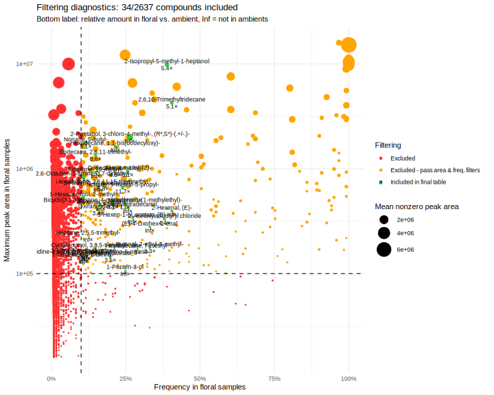
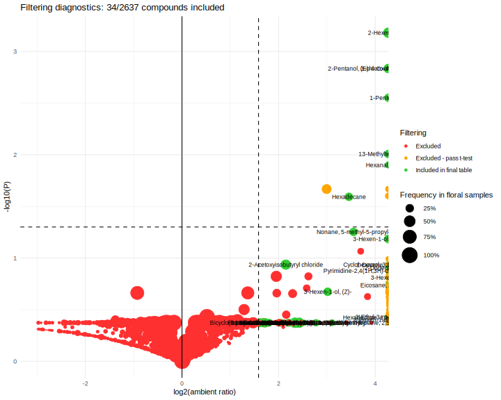

Ipomopsis microbe leaf volatile experiment
Janelle Bohey, John Powers
2022-12-16
# library(googlesheets4)
# exp1_meta <- read_sheet("1k2XJUsRyTsQEeEoZE24yTvsl7kSyf2Gg6gehs8pUvOo", sheet="metadata", guess_max=200) %>%
# mutate(plant = as.character(plant))
# exp2leaf_meta <- read_sheet("1EwPMsBAxqrRtuqH4uUBtthUOZlQluQICSvNr9u87h0E", sheet="metadata", guess_max=200) %>%
# mutate(plant = as.character(plant))
# gc_verdicts <- read_sheet("1X8oo7qZlo1p6MVl_CBeBe6CUTHEAcd-FWQzfHud3Qws", sheet = "2022gc220929") %>%
# mutate(sample2 = ifelse(is.na(sample), FileName, sample))
# exp1_verdicts <- gc_verdicts %>% filter(sample2 %in% exp1_meta$filename)
# exp2leaf_verdicts <- gc_verdicts %>% filter(sample2 %in% exp2leaf_meta$filename)
# write_csv(exp1_verdicts, file = "data/exp1_verdicts.csv")
# write_csv(exp2leaf_verdicts, file = "data/exp2leaf_verdicts.csv")
# load("~/MyDocs/MEGA/UCI/Schiedea/Analysis/scent/rmbl/Inventory/shimadzu_data_22.rda")
# exp1.data <- shimadzu.data.22 %>% filter(Filename %in% exp1_verdicts$FileName)
# exp2leaf.data <- shimadzu.data.22 %>% filter(Filename %in% exp2leaf_verdicts$FileName)
# save(exp1.data, file = "data/exp1_data.rda")
# save(exp2leaf.data, file = "data/exp2leaf_data.rda")
exp2leaf.verdicts <- read_csv("data/exp2leaf_verdicts.csv")
load("data/exp2leaf_data.rda") #loads exp2leaf.data (Shimadzu output)
exp2leaf.data <- exp2leaf.data %>% left_join(select(exp2leaf.verdicts, Filename = FileName, sample2)) %>%
select(-Filename) %>% rename(Filename = sample2) %>% #replace FileName with the sample2 it holds (accounts for skips)
droplevels()
exp2leaf.all <- dcast(exp2leaf.data, Filename~Name, sum, value.var="Area")
rownames(exp2leaf.all) <- exp2leaf.all[,1]
exp2leaf.all[,1] <- NULLRead metadata
metadata <- read_csv("data/EXP 2 (microbes) Leaf Volatile Sampling - metadata.csv") %>%
filter(filename != "#N/A") %>%
mutate(plantid = paste(site, plant, sep="-"))# %>%
#left_join(read_csv("data/exp2leaf_treatments.csv") %>% mutate(plant = as.character(plant)))
rownames(metadata) <- metadata$filename
metadata <- metadata[rownames(exp2leaf.all),] #order metaddata to match order of data
#metadata %>% count(species, time, treatment) %>% kable()
metadata %>% filter(site!="AMB") %>% count(plantid, time) %>% count(n)# A tibble: 2 × 2
n nn
<int> <int>
1 1 75
2 2 23Filtering
metadata <- metadata %>% mutate(type= ifelse(site=="AMB", "ambient","floral")) %>%
load_metadata(GCMS_metadata, date = "date", sample = "filename", group=NULL, type = "type")
longdata <- load_longdata(exp2leaf.data, sample = "Filename", RT = "Ret.Time",
name = "Name", area = "Area", match = "SI", maxmatch=100)
sampletable <- make_sampletable(longdata, metadata)
chemtable <- make_chemtable(longdata, metadata) %>%
filter_RT(2, 17) %>%
filter_match(0.8) %>%
filter_freq(0.2, group = TRUE) %>%
filter_contaminant(cont.list = "Caprolactam") %>%
filter_area(min_maximum = 1e5) %>%
filter_ambient_ratio(sampletable, metadata, ratio = 3) %>%
filter_ambient_ttest(sampletable, metadata,
alpha = 0.05, adjust = "fdr")
chemtable$filter_final <- with(chemtable, filter_RT == "OK" & filter_match =="OK" &
filter_freq.floral == "OK" & filter_area == "OK" &
(filter_ambient_ratio == "OK" | (filter_ambient_ttest == "OK" & ambient_ratio >3)) &
filter_contaminant == "OK")
plot_filters(chemtable, option="rarity")
plot_filters(chemtable, option="ambient")plot_filters(chemtable, option="prop")
vol <- prune_sampletable(sampletable, chemtable, metadata)
files_exclude <- rownames(vol)[rowSums(vol)==0] #files with no filtered peaks
vol <- vol[!(rownames(vol) %in% files_exclude) ,]
meta <- metadata[metadata$type == "floral" & !(metadata$sample %in% files_exclude),] %>% droplevels()
#vol <- vol / as.numeric(meta$equil + meta$pumping)/3600 / meta$flrs #0.5 hr of equilibration plus 0.25 hr pumping, one flowerlibrary(pheatmap)
library(dendsort)
library(viridis)
ph <- pheatmap(as.matrix(t(vol))^(1/3),
cluster_cols=T, show_colnames=F,
clustering_method="mcquitty", clustering_distance_rows="correlation",
clustering_distance_cols=vegdist(vol, method = "bray"),
clustering_callback = function(hc, ...){dendsort(hc, type="average")},
scale="none", color=inferno(512),
#annotation_col = data.frame(meta %>% select("species","treatment","time"), row.names=rownames(vol)),
fontsize = 10, border_color = NA, legend=F, annotation_legend=T, cutree_rows=6
)
(cap_treat <- vegan::capscale(sqrt(vol) ~ species + time + treatment, data=meta))
anova.cca(cap_treat, by="margin") # samples should be averaged by plant first
plot(cap_treat, type="n")
points(cap_treat, display="sites",
pch=c(1,19)[as.integer(meta$time)],
col=c("red","magenta")[as.integer(meta$species)])
legend("topleft", levels(meta$species), title="Species", fill=c("red","magenta"))
legend("topright", levels(meta$time), title="Time", pch=c(1,19))
text(cap_treat, display="species", cex=0.5, col=3)
text(cap_treat, display="cn", cex=0.5)
kable(arrange(as.data.frame(cap_treat$CCA$v), CAP1))